Tell Claude the number. Every style works free ($0, built on your computer) or paid (AI images).
1
Midnight Bioluminescent
midnight
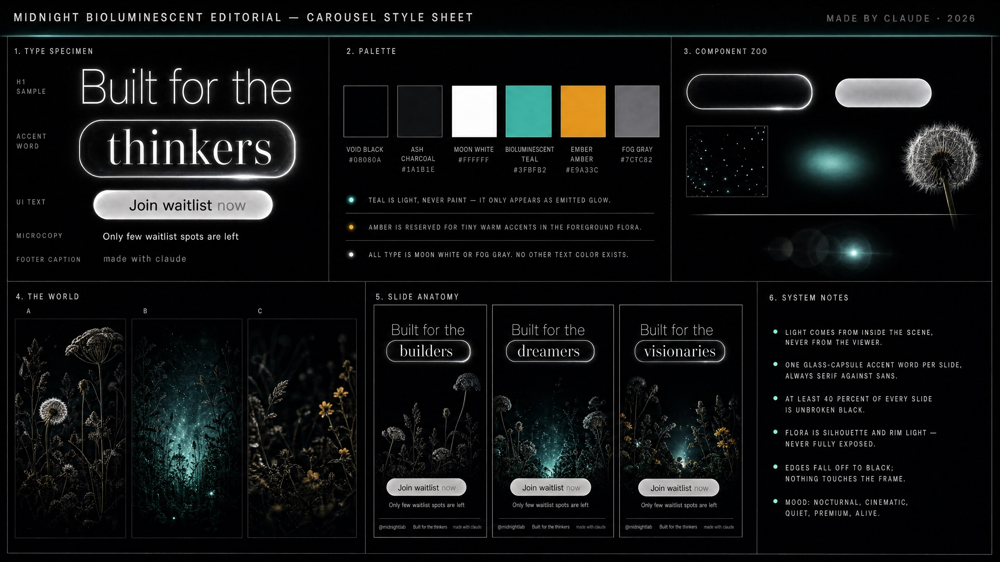
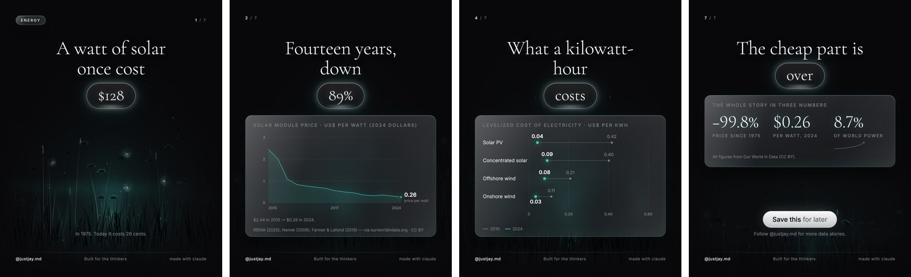
Void-black meadow lit from inside by a teal glow; every card, chart and caption is frosted glass; thin serif headline with one word in a glass capsule.
Best for: tech, AI, finance, data-heavy explainers, premium brands Free ($0) images: painted locally in code (carousel_localbg.py) — no photos needed Paid: AI images painted from this sheet (+ your logo)
2
Archival Swiss Poster
archival
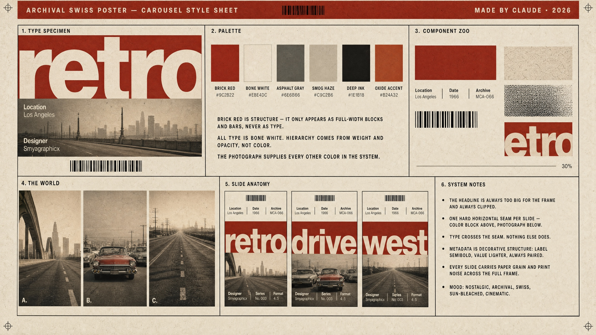
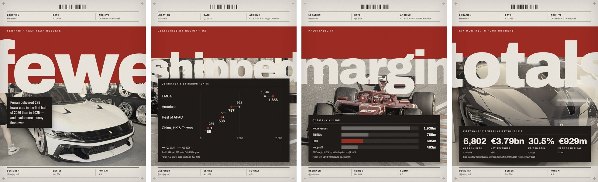
Bone paper, a brick-red block and one hard seam; one huge lowercase word clipped at both edges crossing into a sun-bleached photograph; metadata bands top and bottom.
Best for: history, architecture, design, sport, editorial/news Free ($0) images: one freely-licensed Wikimedia photo per slide (fetch_photos.py), credited Paid: AI images painted from this sheet (+ your logo)
3
Celestial Surrealist Collage
celestial
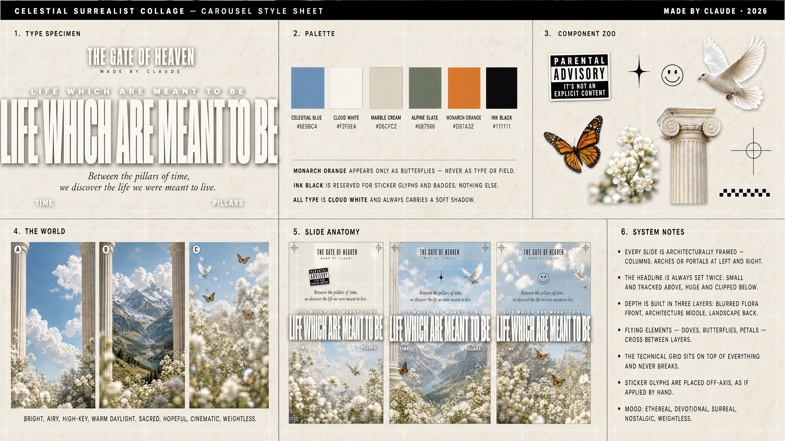
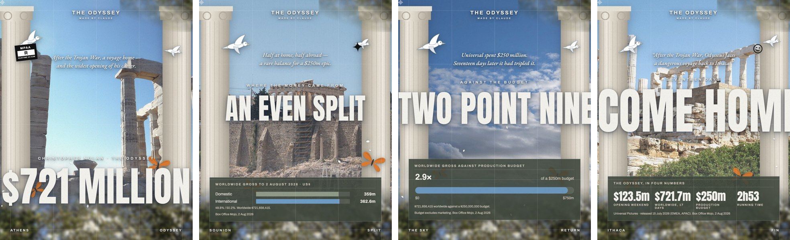
High-key sky framed by ionic columns, headline set twice, doves and monarch butterflies crossing three depth layers, technical grid on top.
Best for: film, culture, wellness, art, luxury Free ($0) images: freely-licensed landscape + blossom photos per slide (fetch_photos.py) Paid: AI images painted from this sheet (+ your logo)
4
Chalk-on-Ground Editorial
chalk
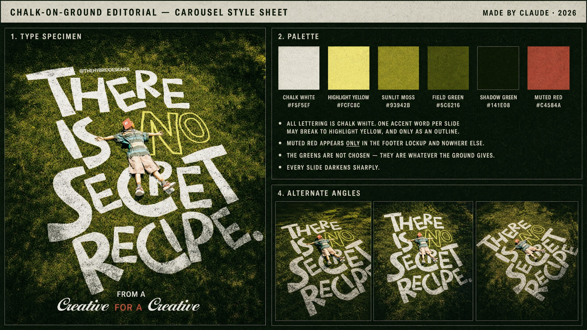
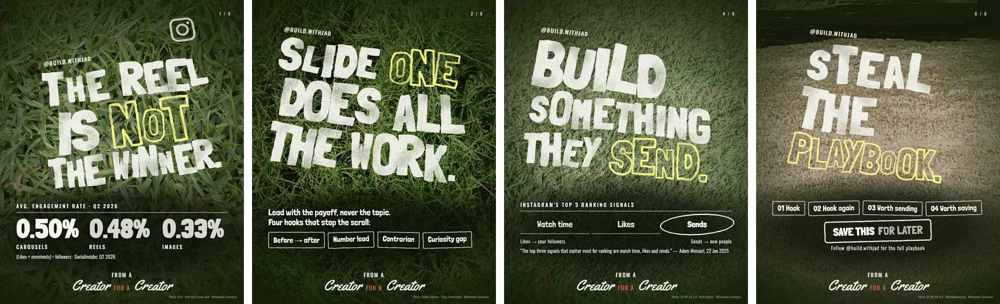
Overhead lawn photo with hand-drawn chalk capitals lying on the grass, one yellow-outline accent word, heavy vignette, 'FROM A Creator FOR A Creator' footer lockup.
Best for: creators, coaches, sport, outdoors, motivation, landscaping Free ($0) images: top-down lawn photos from Wikimedia (search by grass species), credited Paid: AI images painted from this sheet (+ your logo)
5
Sun-Faded Photo Poster
sunfaded
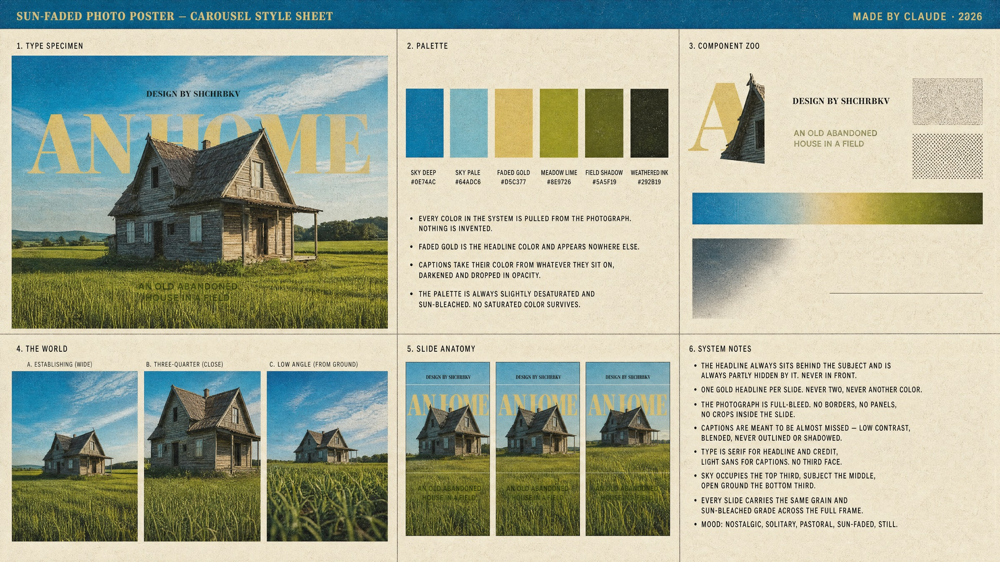
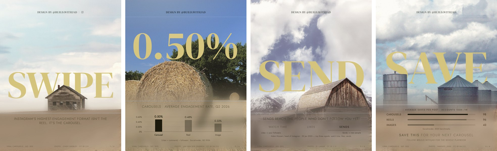
Full-bleed pastoral photograph, one faded-gold serif headline sitting BEHIND the subject, almost-missed light captions, no panels.
Best for: real estate, travel, home services, farming, lifestyle, nostalgia Free ($0) images: freely-licensed pastoral photos (sky top, one subject middle, open ground bottom), with a Vision cutout per slide Paid: AI images painted from this sheet (+ your logo)
6
Sky-Blue Tech Poster
skyblue
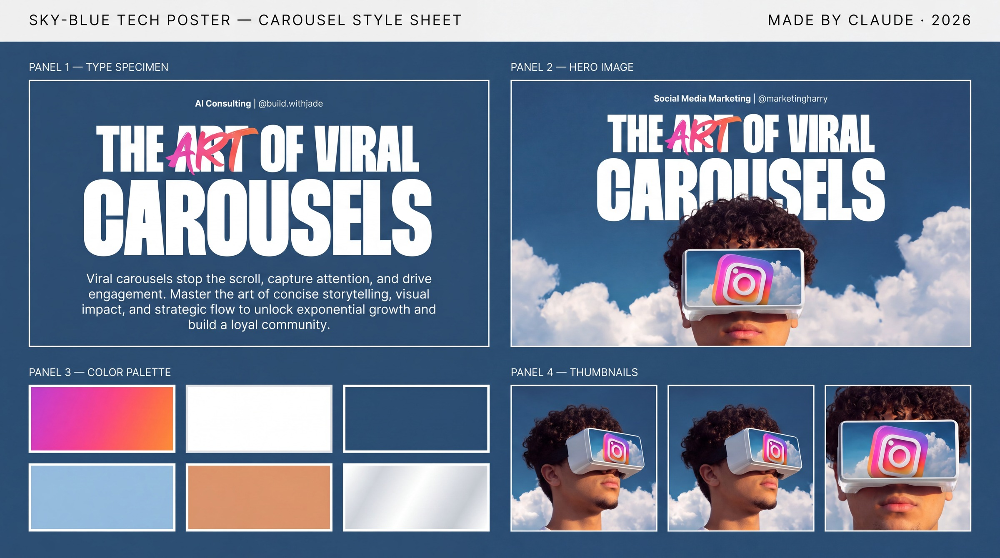
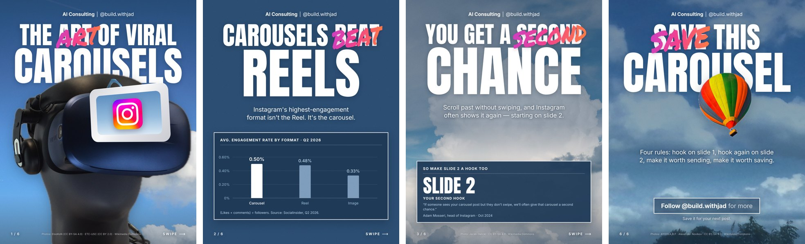
Navy field and clear-sky photography, heavy condensed white caps, ONE word re-written in a magenta-to-orange brush script, the subject cut out and standing in front of the headline.
Best for: social media marketing, agencies, tech, apps, personal brands Free ($0) images: clear-sky + subject photos from Wikimedia with Vision cutouts Paid: AI images painted from this sheet (+ your logo)
Using your own photos?
Claude matches each photo to one of these layouts automatically.
preview
Behind-the-subject + orbit text one person/object centred, head in the upper-middle
preview
Caps + script punch subject low in frame, calm top 40%
preview
Editorial serif subject to one side, calm wall/space on the other; great with no person (a roof, a room)
preview
Scattered serif subject centred with open space both sides, or open sky
preview
Cascading serif subject in motion or looking across the frame, clear diagonal